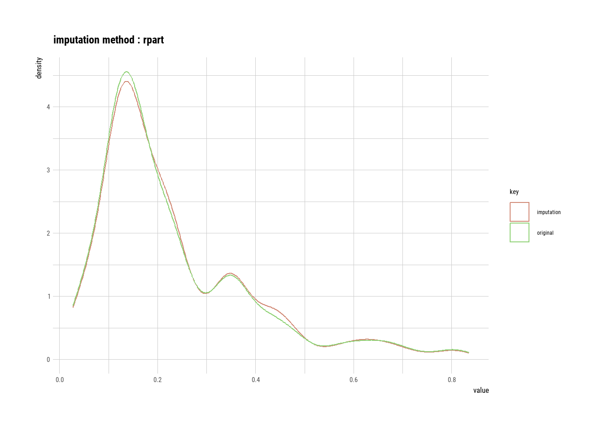

First we will install all the packages required for our operations on our dataset.
# Sets the number of significant figures to two - e.g., 0.01options(digits =2)# Required package for quick package downloading and loading if (!require(pacman))install.packages("pacman")
Loading required package: pacman
pacman::p_load(cluster, # K cluster analyses dlookr, # Exploratory data analysis formattable, # HTML tables from R outputs ggfortify, # Plotting tools for stats ggpubr, # Publishable ggplots here, # Standardizes paths to data kableExtra, # Alternative to formattable knitr, # Needed to write HTML reports missRanger, # To generate NAs plotly, # Visualization package rattle, # Decision tree visualization rpart, # rpart algorithm tidyverse, # Powerful data wrangling package suite visdat) # Another EDA visualization package# Set global ggplot() theme# Theme pub_clean() from the ggpubr package with base text size = 16theme_set(theme_pubclean(base_size =16)) # All axes titles to their respective far right sidestheme_update(axis.title =element_text(hjust =1))# Remove axes tickstheme_update(axis.ticks =element_blank()) # Remove legend keytheme_update(legend.key =element_blank())
LOADING AND DOWNLOADING THE DATASET:
Here we will load the dataset which we are going to use for doing all our operations.
# Let's load a data set from the diabetes data setdemographics <- readr::read_csv('https://raw.githubusercontent.com/rfordatascience/tidytuesday/master/data/2023/2023-09-05/demographics.csv')
Rows: 1327 Columns: 8
── Column specification ────────────────────────────────────────────────────────
Delimiter: ","
chr (1): facet
dbl (7): year, sample_size, employment, members, covered, p_members, p_covered
ℹ Use `spec()` to retrieve the full column specification for this data.
ℹ Specify the column types or set `show_col_types = FALSE` to quiet this message.
demographics
# A tibble: 1,327 × 8
year sample_size employment members covered p_members p_covered facet
<dbl> <dbl> <dbl> <dbl> <dbl> <dbl> <dbl> <chr>
1 1973 49095 75519. 18089. NA 0.240 NA all wage an…
2 1974 48245 77101. 18176. NA 0.236 NA all wage an…
3 1975 46488 75704. 16778. NA 0.222 NA all wage an…
4 1976 47648 78777. 17403. NA 0.221 NA all wage an…
5 1977 57191 81334. 19335. 21535. 0.238 0.265 all wage an…
6 1978 57321 84966. 19548. 21898. 0.230 0.258 all wage an…
7 1979 58080 87117. 20986. 23540. 0.241 0.270 all wage an…
8 1980 68594 87480. 20095. 22493. 0.230 0.257 all wage an…
9 1981 15433 89538. 19137. 21453. 0.214 0.240 all wage an…
10 1983 173932 88290. 17717. 20532. 0.201 0.233 all wage an…
# ℹ 1,317 more rows
# What does the data look like?demographics |>head() |>formattable()
year
sample_size
employment
members
covered
p_members
p_covered
facet
1973
49095
75519
18089
NA
0.24
NA
all wage and salary workers
1974
48245
77101
18176
NA
0.24
NA
all wage and salary workers
1975
46488
75704
16778
NA
0.22
NA
all wage and salary workers
1976
47648
78777
17403
NA
0.22
NA
all wage and salary workers
1977
57191
81334
19335
21535
0.24
0.26
all wage and salary workers
1978
57321
84966
19548
21898
0.23
0.26
all wage and salary workers
DIAGNOSE YOUR DATA:
The data set which we are using is being diagnosed here.
# What are the properties of the datademographics |>diagnose() |>formattable()
variables
types
missing_count
missing_percent
unique_count
unique_rate
year
numeric
0
0.0
49
0.037
sample_size
numeric
0
0.0
1295
0.976
employment
numeric
0
0.0
1327
1.000
members
numeric
0
0.0
1327
1.000
covered
numeric
92
6.9
1236
0.931
p_members
numeric
0
0.0
1327
1.000
p_covered
numeric
92
6.9
1236
0.931
facet
character
0
0.0
28
0.021
DIAGNOSE OUTLIERS:
Here we will diagnose the outliers by plotting a box plot and histogram.
# Boxplots and histograms of data with and without outliersdemographics |>select(find_outliers(demographics)) |>plot_outlier()
Basic Exploration of Missing Values (NAs):
Table showing the extent of NAs in columns containing them
# Randomly generate NAs for 30na.demographics <- demographics |>generateNA(p =0.3)# First six rowsna.demographics |>head() |>formattable()
year
sample_size
employment
members
covered
p_members
p_covered
facet
1973
49095
NA
NA
NA
0.24
NA
all wage and salary workers
NA
48245
77101
18176
NA
0.24
NA
all wage and salary workers
1975
NA
75704
16778
NA
0.22
NA
NA
1976
47648
78777
NA
NA
0.22
NA
all wage and salary workers
1977
NA
81334
NA
21535
0.24
0.26
all wage and salary workers
1978
57321
84966
19548
21898
0.23
0.26
NA
# Create the NA tablena.demographics |>plot_na_pareto(only_na =TRUE, plot =FALSE) |>formattable() # Publishable table
variable
frequencies
ratio
grade
cumulative
covered
465
0.35
Bad
14
p_covered
462
0.35
Bad
28
employment
398
0.30
Bad
40
facet
398
0.30
Bad
52
members
398
0.30
Bad
64
p_members
398
0.30
Bad
76
sample_size
398
0.30
Bad
88
year
398
0.30
Bad
100
Plots showing the frequency of missing values
# Plot the insersect of the columns with missing values# This plot visualizes the table abovena.demographics |>plot_na_pareto(only_na =TRUE)
Advanced Exploration of Missing Values (NAs):
Intersect plot that shows, for every combination of columns relevant, how many missing values are common
Orange boxes are the columns in question
x axis (top green bar plots) show the number of missing values in that column
y axis (right green bars) show the number of missing values in the columns in orange blocks
# Plot the intersect of the 5 columns with the most missing values# This means that some combinations of columns have missing values in the same rowna.demographics |>select(covered,employment,year) |>plot_na_intersect(only_na =TRUE)
Determining if NA Observations are the Same:
Missing values can be the same observation across several columns. The visdat package can solve this with the vis_miss() function which shows the rows with missing values through ggplotly()
# Interactive plotly() plot of all NA values to examine every row#na.demographics |>#select(covered, employment, year) |>#vis_miss() |>#ggplotly()
Classifying Outliers:
Before imputing outliers, you will want to diagnose whether it’s they are natural outliers or not.
# Box plotdemographics %>%# Set the simulated normal data as a data frameggplot(aes(x =year, y = facet, fill =facet)) +# Create a ggplotgeom_boxplot(width =0.5, outlier.size =2, outlier.alpha =0.5) +xlab("Year") +# Relabel the x axis labelylab("Covered") +# Remove the y axis labeltheme(legend.position ="none") # Remove the legend
Mean Imputation:
The mean of the observed values for each variable is computed and the outliers for that variable are imputed by this mean
# Raw summary, output suppressedmean_out_imp_p_covered <- demographics |>select(p_covered) |>imputate_outlier(p_covered, method ="mean")# Output showing the summary statistics of our imputationmean_out_imp_p_covered |>summary()
# Visualization of the mode imputationmode_out_imp_p_covered |>plot()
Capping Imputation (aka Winsorizing):
The Percentile Capping is a method of Imputing the outlier values by replacing those observations outside the lower limit with the value of 5th percentile and those that lie above the upper limit, with the value of 95th percentile of the same dataset.
# Raw summary, output suppressedcap_out_imp_p_covered <- demographics |>select(p_covered) |>imputate_outlier(p_covered, method ="capping")# Output showing the summary statistics of our imputationcap_out_imp_p_covered |>summary()
# Visualization of the capping imputationcap_out_imp_p_covered |>plot()
Imputing NAs:
We can use the impute_na() method.
K-Nearest Neighbor (KNN) Imputation:
KNN is a machine learning algorithm that classifies data by similarity. This in effect clusters data into similar groups. The algorithm predicts values of new data to replace NA values based on how closely they resembles training data points, such as by comparing across other columns.
# KNN plot of our dataset without categoriesdata_omit <-na.omit(demographics)demographicsAlt <- demographicsdemographicsAlt <-top_n(demographics,20,facet)autoplot(clara(data_omit[-5], 3))
#demographics.noNA
# Raw summary, output suppressed#demographicsnona <- demographics.noNA #knn_na_imp_pa_covered <- demographicsnona|># imputate_na(covered, method = "knn")# Plot showing the results of our imputation#knn_na_imp_pa_covered |># plot()
There are no missing values in the dataset.
Recursive Partitioning and Regression Trees (rpart):
rpart is a decision tree machine learning algorithm that builds classification or regression models through a two stage process, which can be thought of as binary trees. The algorithm splits the data into subsets, which move down other branches of the tree until a termination criteria is reached.
library(magrittr)
Attaching package: 'magrittr'
The following object is masked from 'package:purrr':
set_names
The following object is masked from 'package:tidyr':
extract
The following object is masked from 'package:dlookr':
extract
# Raw summary, output suppressednon_numeric <- demographics %>%select_if(is.numeric)rpart_na_imp_p_covered <- non_numeric %>%imputate_na(p_covered, method ="rpart")# Plot showing the results of our imputationrpart_na_imp_p_covered %>%plot()

Multivariate Imputation by Chained Equations (MICE):
MICE is an algorithm that fills missing values multiple times, hence dealing with uncertainty better than other methods. This approach creates multiple copies of the data that can then be analyzed and then pooled into a single dataset
iter imp variable
1 1 year sample_size employment members p_members p_covered
1 2 year sample_size employment members p_members p_covered
1 3 year sample_size employment members p_members p_covered
1 4 year sample_size employment members p_members p_covered
1 5 year sample_size employment members p_members p_covered
2 1 year sample_size employment members p_members p_covered
2 2 year sample_size employment members p_members p_covered
2 3 year sample_size employment members p_members p_covered
2 4 year sample_size employment members p_members p_covered
2 5 year sample_size employment members p_members p_covered
3 1 year sample_size employment members p_members p_covered
3 2 year sample_size employment members p_members p_covered
3 3 year sample_size employment members p_members p_covered
3 4 year sample_size employment members p_members p_covered
3 5 year sample_size employment members p_members p_covered
4 1 year sample_size employment members p_members p_covered
4 2 year sample_size employment members p_members p_covered
4 3 year sample_size employment members p_members p_covered
4 4 year sample_size employment members p_members p_covered
4 5 year sample_size employment members p_members p_covered
5 1 year sample_size employment members p_members p_covered
5 2 year sample_size employment members p_members p_covered
5 3 year sample_size employment members p_members p_covered
5 4 year sample_size employment members p_members p_covered
5 5 year sample_size employment members p_members p_covered
# Plot showing the results of our imputationmice_na_imp_p_covered |>plot()